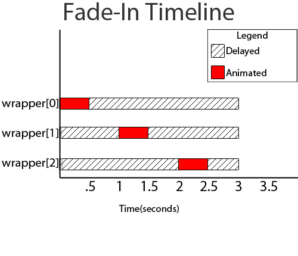

Sequential fade ins (the action of fading in elements one after the other) have the ability to draw the user's attention to a certain portion of your content. They can also give a professional touch to your jQuery photo galleries. I have created a jQuery plug-in that makes the process of sequentially fading elements extremely simple.
The .fadeInSequence() method animates the opacity of the matched elements one element at a time.
The default value for fadeInTime is 500ms, and the default value for timeBetween is 0ms. The method is overloaded, so the following are all valid function calls.
[js] $("wrapper p").fadeInSequence(); //Elements will each fade in over a duration of 500ms with no pause between each element $("wrapper p").fadeInSequence(1000); //Elements will each fade in over a duration of 1000ms with no pause between each element $("wrapper p").fadeInSequence(300, 500); //Elements will each fade in over a duration of 300ms with a 500ms pause between each element [/js]The Fade In + Fade Out demonstrates that the queue is maintained for each element until the end of the entire .fadeInSequence() animation. This helps retain the "chainability" that we've grown to love with jQuery.
The plug-in was created with some simple math. In order to keep the queue equal between all animated elements, a varying delay was placed at the end of the fadeIn's. This visual representation demonstrates how the plugin operates. In this example, the fadeInTime is set to 500 and timeBetween is also set to 500.  Questions? Comments? Bugs to Report? Give us your feedback in the comment section below.Joseph McCullough is the owner of McCullough Designs, a web design company located in Tyler, Texas. His blog discusses web standards, programming, and general business tips.